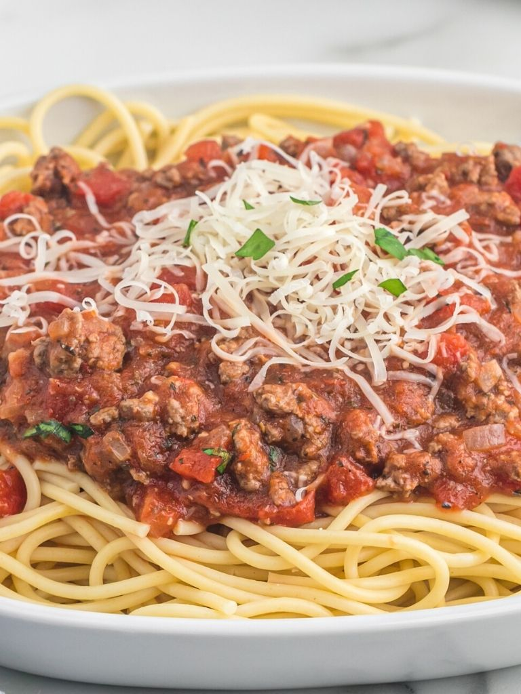

SPAGHETTI MEAT SAUCE (KHAWLA & KHALID)

Easy to make with dried seasonings and canned tomatoes. Make it in one pot and let it simmer on the stove top for the best flavor. Serve over pasta noodles or use in any recipe that calls for spaghetti sauce.
INGREDIENTS
-
Ground Beef
-
Sweet Onion
-
Garlic
-
Crushed Tomatoes
-
Tomato Sauce
-
Diced Tomatoes w/ Basil, Garlic, Oregano
-
Granulated Sugar ]
-
Dried Basil & Oregano
-
Sugar
-
Salt & Pepper
STEPS
-
Brown Ground Beef : In a skillet pan, over medium-high heat, brown and crumble the ground beef with the onion, garlic, and salt. Once beef is no longer pink be sure and drain the excess grease.
-
Spaghetti Sauce : Add the remaining ingredients including tomato sauce, crushed tomatoes, diced tomatoes, sugar, basil, oregano, and salt & pepper. Stir to combine.
-
Simmer : This is the most important step! Bring the spaghetti sauce to a low boil. Once boiling, reduce heat to medium-low and let it simmer for at least 25 minutes. Longer if you can! The flavor gets better and better the longer it simmers.
-
Serve : Serve the meat sauce over pasta noodles of choice.